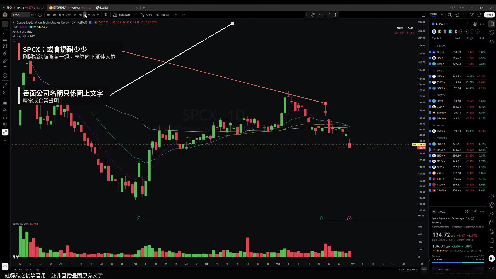
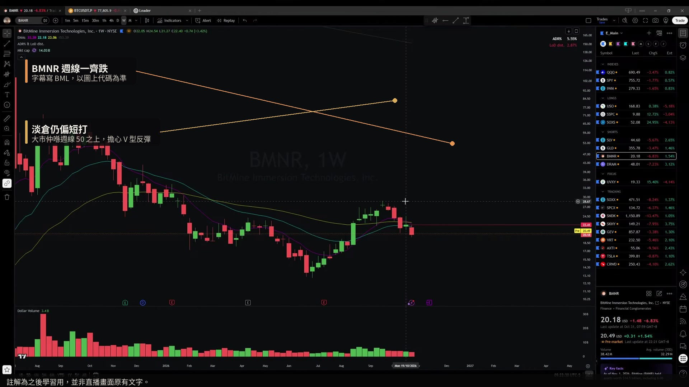

概要
個股未延伸，但大市位置令佢仍然謹慎
1:10:12 佢話 SpaceX／SPCX 呢單或會擺耐少少：剛開始跌破嘅第一週，未算向下延伸太遠；連同 BMNR 下跌，估會擺長少少。但隨即補充，淡倉仍較想快進快出，尤其大市還在週線 50 之上，反彈可以好強，甚至 V 型收回。畫面公司名稱「Space Exploration Technologies Corp」只係圖上文字，唔當成企業聲明。字幕把 BMNR 聽成 BML。
圖一 · 主圖
SPCX：剛開始跌破，或會擺耐少少
直播 1:10:20

原話
Yeah, I think SpaceX short, I may swing it for a little bit longer, as this is just like the week one for this breakdown and it's not really that extended to the downside, with this BMNR drop as well. Like I think I will swing this one for longer, I guess.
係，SpaceX 呢單淡倉，我或會擺耐少少，因為只係呢次跌破嘅第一週，未算向下延伸得太遠，連同呢單 BMNR 下跌。我估呢單會擺長少少。
畫面代碼係 SPCX；標題寫住 Space Exploration Technologies Corp，只係圖上文字。YouTube 把 BMNR 聽成 BML，下一幅先見到 BMNR。
點樣讀
「第一週跌破、未算延伸」係佢想擺耐少少嘅理由。公司名稱以畫面文字標註，唔好當成企業層面嘅陳述。
圖二
BMNR 週線一齊跌；淡倉仍偏短打
直播 1:10:50

原話
I don't know, like I'm still decided. I think for the shorts, I prefer them to be a quicker swings instead of holding them for longer. I don't want it to like develop a habit to really trying to swing shorts, especially when the market is still above like the 50 weekly. Like the bounce could be pretty powerful, like or we can get the V-shaped recovery.
我都未完全決定。淡倉我較想快進快出，而唔係持有好耐。我唔想養成把淡倉擺好長嘅習慣，尤其大市仲在週線 50 之上。反彈可以好強，或者會見到 V 型收回。
點樣讀
即使個股未延伸，大市仲在週線 50 之上，佢仍然怕強反彈。呢句同稍早「唔想在 50 之上擺長淡倉」係同一邏輯。
附註
注意事項
- SPCX 畫面寫住 Space Exploration Technologies Corp，只當圖上文字，唔當成企業聲明。
- YouTube 把 BMNR 聽成 BML，本站按畫面更正。
- 畫面睇唔到成交價或者倉位。
免責聲明：呢份係教育拆解，唔係投資建議，亦唔好當作買賣指示。